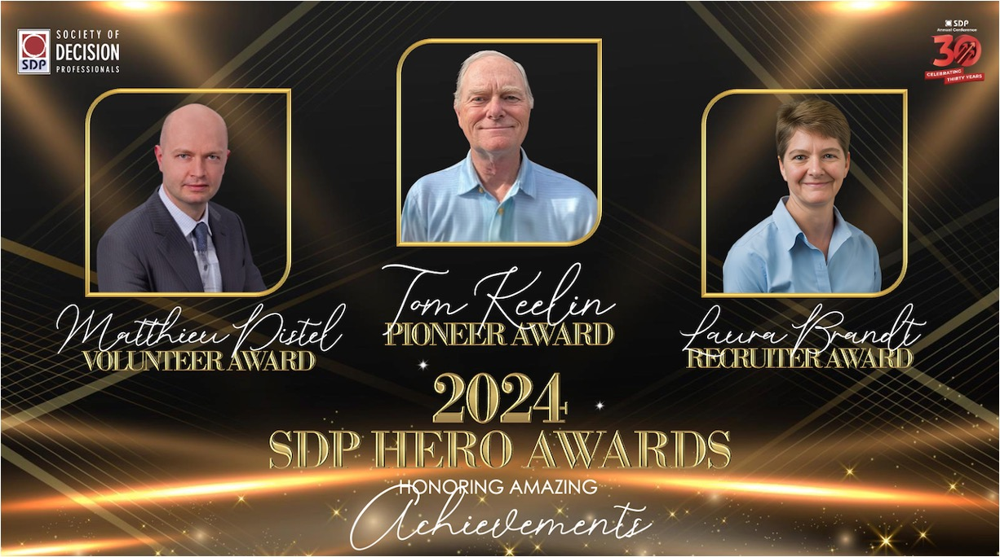

SDP Hero Awards

Pioneer Award
The most prestigious SDP Award, reserved to those who made indelible contributions over an extended period of time that helps the profession of DA take root, develop its core practices, and extend its utility to new areas.
Past Pioneer Recipients
- 2024 | Tom Keelin | For indelible contributions spanning multiple decades that have supported the growth of DQ as a profession; for developing and publishing new DQ core practices that won wide adoption across multiple industries; for inventing the metalog distributions, as well as their use in Bayesian inference, which has greatly extended the utility of Bayesian methods in practical decision-making
- 2023 | Larry Neal, Frank Koch and Brian Putt
- 2022 | Dr. Bruce Judd
- 2021 | Larry Phillips, Emeritus Professor of Decision Science, London School of Economics
- 2020 | Howard Raffia and Ralph Keeney
- 2019 | Ron Howard and Jim Matheson
- 2018 | Carl Spetzler
SDP Community Service Award (Formerly Volunteer of the Year Award)
Honoring selfless and durable contributions, through charitable service, to advancing societal
progress through better decision making in civic, governmental, youth, and nonprofit domains.
Past Volunteer Recipients
- 2023 | Matt Gorman
- 2022 | Pat Leach
- 2021 | Lee Failing, Robin Gregory and Graham Long
- 2020 | Jay Andersen
- 2019 | Tim Nieman
- 2018 | Frank Koch
SDP Distinguished Service Award
Awarded to those who exemplify the spirit of giving back to SDP through their contribution to building, strengthening, and improving the society.
In order to align the Hero Awards with our vision of becoming the world forum on decision-making, the Awards Committee has added three new awards:
SDP Early Career Excellence Award
Given to individuals who, at an early stage in their career, have shown effort and dedication to the field of decision making, have contributed powerful new concepts or methods to the profession, or have applied its principles with excellence within their own organization.
SDP Inspirational Achievement Award
Awarded for an inspirational achievement in the profession of decision quality that has resulted
in transformative outcomes or widespread adoption, stemming from impact through
implementation or innovation. Such an achievement should result in substantial impact, inspire
others, and exemplify the mission of the Society in action.
Recruiter of the Year Award
Honoring accomplishments in expanding the SDP member family, or sponsoring organizations.
Past Recruiter Recipients
- 2023 | Victoria Hemming and Trygve Botn & Norway Conference Team
- 2022 | Shona Bernard Chandler
- 2021 | Ellen Coopersmith and the Decision Frameworks Team
- 2020 | John Mauer and Somik Raha
- 2019 | Andrew Thrift and Basil Stumborg
- 2018 | Jeremy Walker and Craig McKnight
|